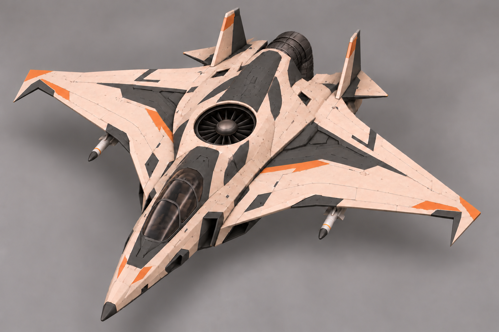
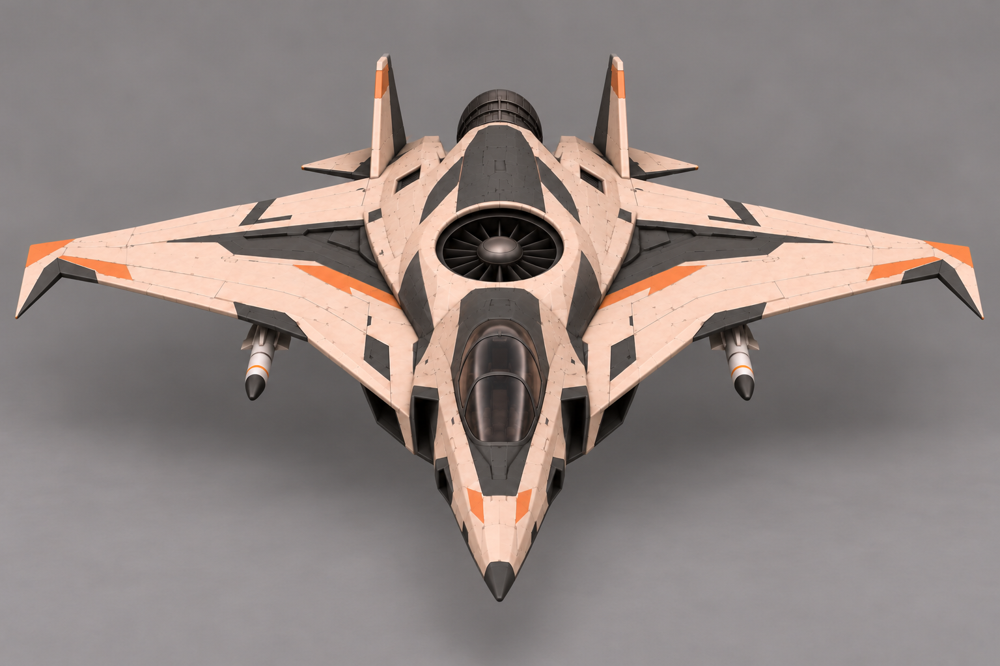
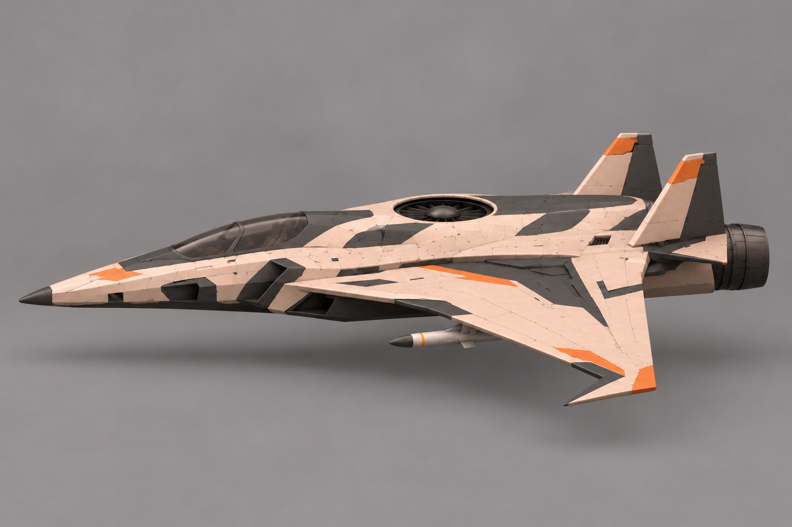
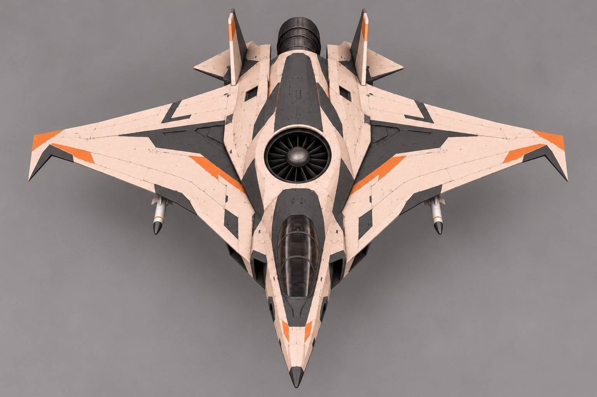
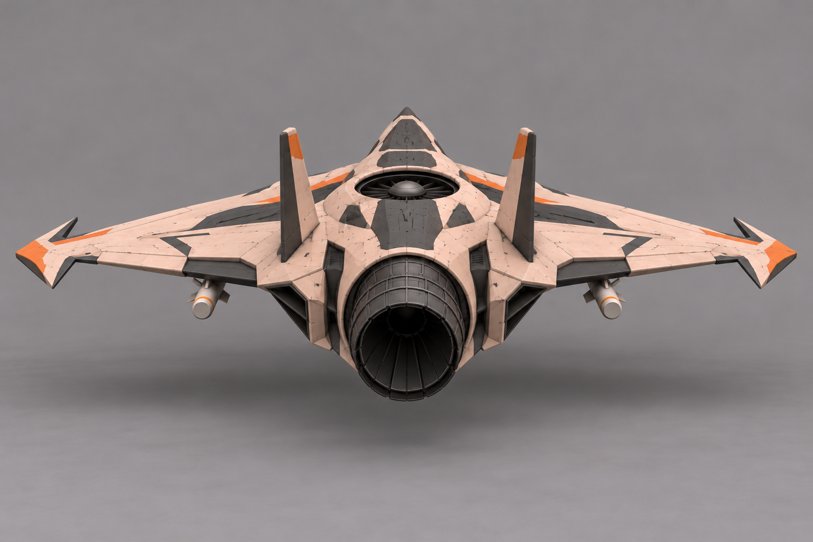

Сопло вниз · зависание

Выбран автором 31.10.2026. D «Серп»: острые гранёные зеркальные законцовки к кабине, одна большая центральная подъёмная турбина, одно заднее сопло с поворотом вниз, два киля. Основной вид задаёт форму, остальные виды художественные: перспективу/пропорции/стыки свести на общей сетке. Пакет изображений завершён; сетка, UV, риг, анимации и Unity ещё не готовы.
Общий лист · Паспорт · Входы · История вариантов





